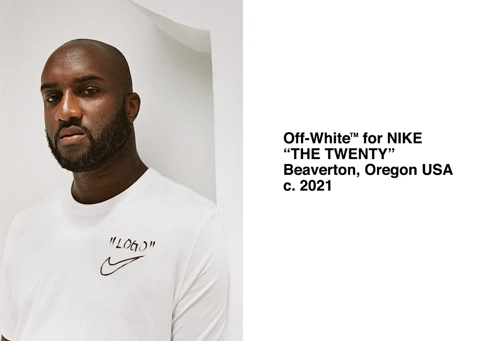
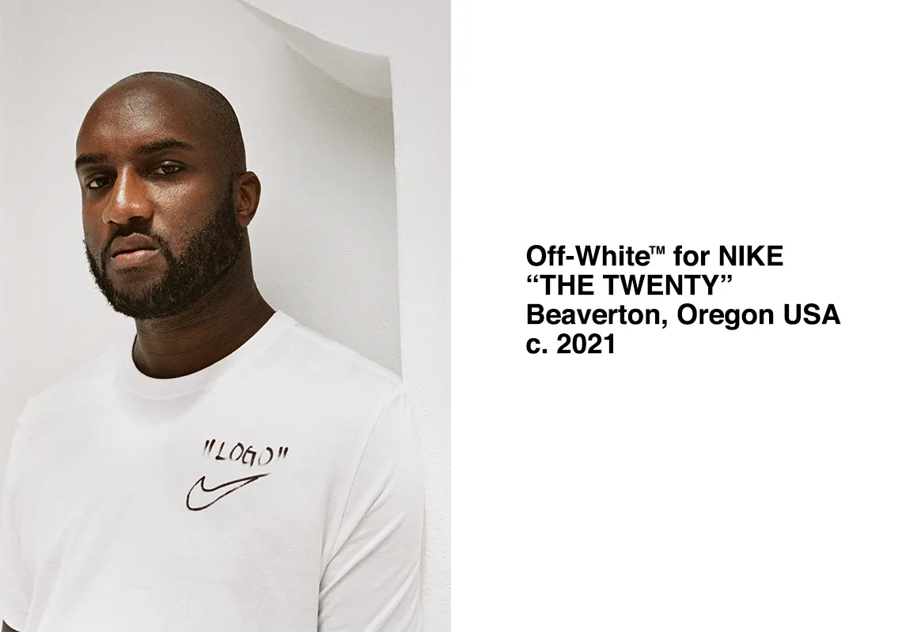

Virgil Abloh was an American fashion designer, entrepreneur, and artistic director known for blending streetwear with luxury fashion. He was the founder of Off-White, a high-end streetwear brand, and became the Men's Artistic Director at Louis Vuitton in 2018, making history as the first Black designer to lead the brand.

 
